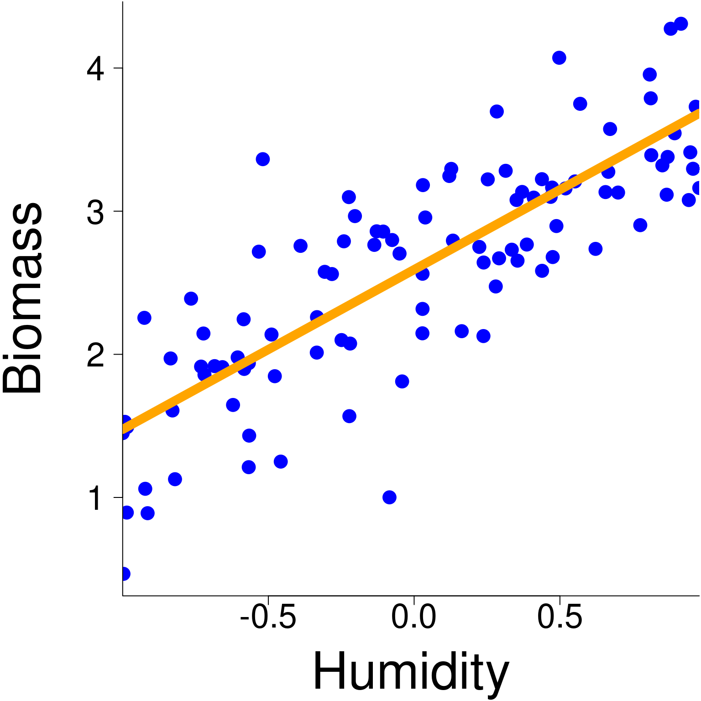
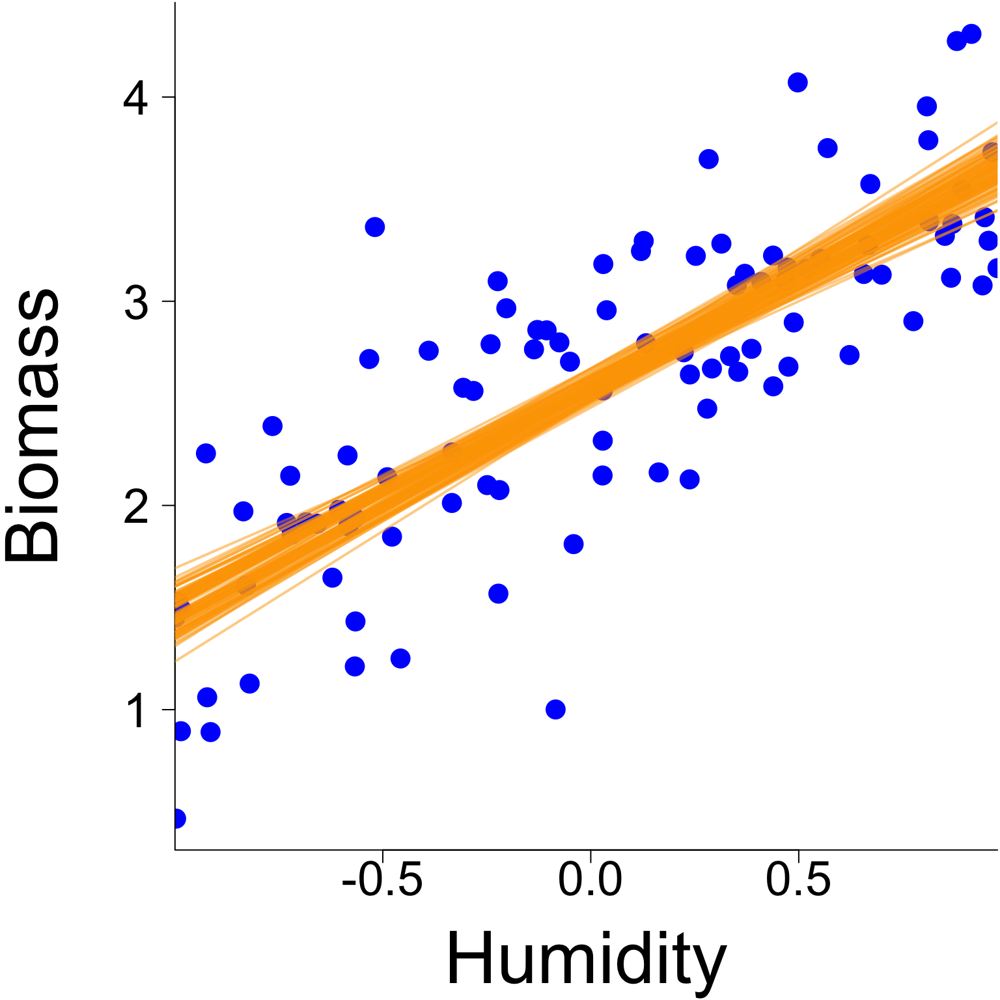
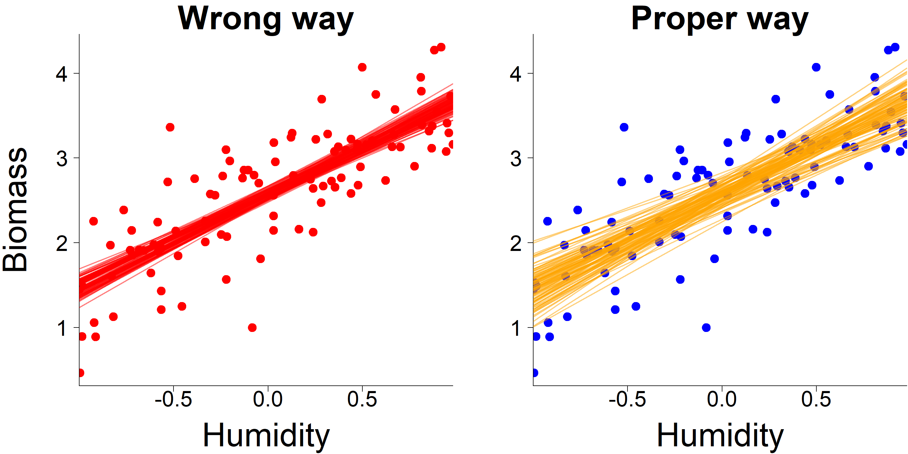
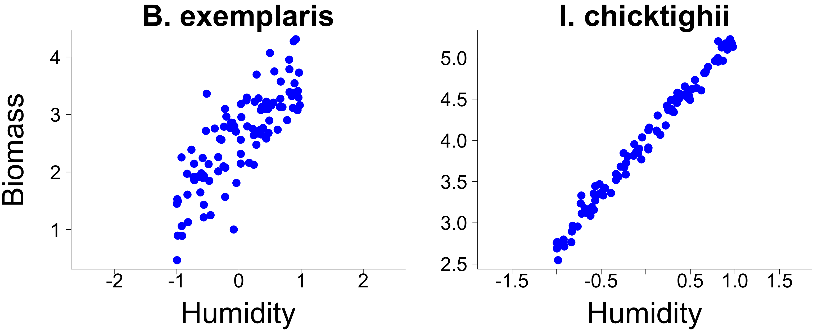

Linear models
Basic regression model
Hierarchical models are a generalized version of the classic regression models you have seen in your undergraduate courses.
In its simplest form, a regression model is usually presented as
\[ y_i = \beta_0 + \beta_1 x_{i} + \varepsilon \]
It is known as a simple linear model, where :
\(y_i\) is the value of a response variable for observation \(i\)
\(x_i\) is the value of an explanatory variable for observation \(i\)
\(\beta_0\) is the model intercept
\(\beta_1\) is the model slope
\(\varepsilon\) is the error term
Basic regression model
The cool thing about the simple linear model is that it can be studied visually quite easily.
For example if we are interested in knowing how a newly discovered plant species (Bidonia exemplaris) reacts to humidity, we can relate the biomass of B. exemplaris sampled at 100 sites with the soil humidity content and readily visual the data and the trend.
Basic regression model
Estimating regression parameters
Many techniques have been proposed to estimate the parameters of a regression model.
The goal of this course is not to study these techniques but we will learn how to play with the estimated parameters because it will be very useful as we move along.
For example, if we want to build a model’s confidence interval from a linear regression coded as
reg <- lm(b.exemplaris ~ humidity)How would you do it ?
Let’s look at the model’s results are worth studying
Estimating regression parameters
Model’s results
(summaryReg <- summary(reg))
Call:
lm(formula = b.exemplaris ~ humidity)
Residuals:
Min 1Q Median 3Q Max
-1.47988 -0.26475 0.00611 0.32590 1.36077
Coefficients:
Estimate Std. Error t value Pr(>|t|)
(Intercept) 2.57389 0.04720 54.53 <2e-16 ***
humidity 1.10086 0.07976 13.80 <2e-16 ***
---
Signif. codes: 0 '***' 0.001 '**' 0.01 '*' 0.05 '.' 0.1 ' ' 1
Residual standard error: 0.4718 on 98 degrees of freedom
Multiple R-squared: 0.6603, Adjusted R-squared: 0.6569
F-statistic: 190.5 on 1 and 98 DF, p-value: < 2.2e-16Let’s say we want to construst the model’s confidence intervals by sampling multiple times (say 100 times!) the regression parameters, which we will assume follow Gaussian distribution. How would you do this ?
Estimating regression parameters
Sampling model parameters
We could sample the model parameters but how can we do this properly ?
Any suggestions?
Estimating regression parameters
Sampling model parameters
If we look at the estimated regression model coefficient, we can learn a few things
summaryReg$coefficients Estimate Std. Error t value Pr(>|t|)
(Intercept) 2.573889 0.04720304 54.52804 4.011925e-75
humidity 1.100865 0.07975800 13.80256 1.035796e-24Notably, there are uncertainty around the parameters.
Maybe we can use this information to sample model parameters and reconstruct models across different iterations of parameters.
Let’s give it a shot !
Estimating regression parameters
Sampling model parameters
If we assume that the parameters of our particular model follow a Gaussian distribution, we can state that
\[\beta_0 \sim \mathcal{N}(2.574, 0.047^2)\] \[\beta_1 \sim \mathcal{N}(1.101, 0.080^2)\]
Estimating regression parameters
Sampling model parameters
In R, we can do this as follow
# Object that include regression coefficients
regCoef <- summaryReg$coefficients
# Sample regression parameters
beta_0 <- rnorm(100, mean = regCoef[1,1], sd = regCoef[1,2])
beta_1 <- rnorm(100, mean = regCoef[2,1], sd = regCoef[2,2])Estimating regression parameters
Sampling model parameters

Estimating regression parameters
Sampling model parameters
But is this the right way to do it ?

Estimating regression parameters
Sampling model parameters
Actually, even if the model’s confidence interval look about right, they are wrong !

Estimating regression parameters
Sampling model parameters
The approach presented in the previous slide works only if we assume that the parameters are completely independent from one another.
A situation that happens only in very specific circumstances.
So… We need to find a way to account for the non-independencies between the parameters.
How can we do this ? Any ideas ?
Estimating regression parameters
Sampling model parameters
Assuming that the regression parameters are normally distributed is not a bad assumption.
However to consider a dependencies between the parameters we need to sample them from a multivariate normal distribution where the variance of each parameter and their dependency is defined by a covariance matrix estimated specifically for the data we model.
The good news is that this covariance matrix is given by summary.lm function
(covReg <- summaryReg$cov.unscaled) (Intercept) humidity
(Intercept) 0.0100098513 -0.0005305969
humidity -0.0005305969 0.0285782940Estimating regression parameters
Sampling model parameters
For our specific model, mathematically, we assume that
\[\begin{bmatrix} \beta_0\\ \beta_1\\ \end{bmatrix} \sim \mathcal{MVN} \left( \begin{bmatrix} 2.574\\ 1.101\\ \end{bmatrix}, \begin{bmatrix} 0.0100 & -0.0005 \\ -0.0005 & 0.0286 \\ \end{bmatrix} \right)\]
Note To present the multivariate normal distribution, we rely on matrix notation. This is our first introduction into matrix algebra. We will talk about this more into this course.
Estimating regression parameters
Sampling model parameters
In R, we can sample the parameters using a multivariate normal distribution using the following code
# Object that include regression coefficients
regCoef <- summaryReg$coefficients
# Sample regression parameters
beta <- MASS::mvrnorm(100, regCoef[,1], Sigma = covReg)Estimating regression parameters
Sampling model parameters

Estimating regression parameters
Sampling model parameters - Comparison

Estimating regression parameters
So far, we focused on the most commonly assessed regression parameters of the simple linear model, the slope and the intercept, but there is another one that is very important to consider, especially for this course.
Any ideas which one it is ?
Estimating regression parameters
If we go back to the mathematical description of the model
\[ y_i = \beta_0 + \beta_1 x_{i} + \varepsilon \]
we can see that in the simple linear regression the error term (\(\varepsilon\)) has actually a very precise definition:
\[\varepsilon \sim \mathcal{N}(0, \sigma^2)\] where \(\sigma^2\) is an estimated variance.
In words, it means that the error in a simple linear regression follows a Gaussian distribution with a variance that is estimated.
For most the course, we will play with the variance parameter \(\sigma^2\) in a bunch of different ways.
But before we do this, we need to understand a bit more about how this parameter influence the model.
Estimating regression parameters
A first way to do this is to think about the simple linear regression in a slightly different way. Specifically, based on what we learned in the previous slide the simple linear regression can be rewritten as \[ y \sim \mathcal{N}(\beta_0 + \beta_1 x_{i}, \sigma^2) \] As we will see later in this course, this writting style will become particularly useful as we move forward in this course.
Estimating regression parameters
Variance of the model (\(\sigma^2\))
In essence, \(\sigma^2\) tells us about what the model could not account for.
For example, let’s compare the biomass of Bidonia exemplaris with that of Ilovea chicktighii, another species (a carnivorous plant)

Estimating regression parameters
Variance of the model (\(\sigma^2\))
By regressing humidity on the biomass of both plants, we can obtain the estimated parameters for each regression (which are all available using summary.lm)
# Regression model
regBexemplaris <- lm(b.exemplaris ~ humidity)
regIchicktighii <- lm(i.chicktighii ~ humidity)
# Summary
summaryRegBexemplaris <- summary(regBexemplaris)
summaryRegIchicktighii <- summary(regIchicktighii)Estimating regression parameters
Variance of the model (\(\sigma^2\))
For Bidonia exemplaris
# Estimated coefficients
summaryRegBexemplaris$coefficients[,1:2] Estimate Std. Error
(Intercept) 2.573889 0.04720304
humidity 1.100865 0.07975800# Estimated variance
summaryRegBexemplaris$sigma[1] 0.471798For Ilovea chicktighii
# Estimated coefficients
summaryRegIchicktighii$coefficients[,1:2] Estimate Std. Error
(Intercept) 3.991785 0.008928294
humidity 1.271250 0.015085956# Estimated variance
summaryRegIchicktighii$sigma[1] 0.089239Limits of the simple linear regression
There are two major pitfalls of the simple linear model for problems in the life sciences
One explanatory is almost never enough to approach biological questions nowadays.
The simple linear model assumes that the error follows a Gaussian distribution.
Multiple linear regression
Simple linear regression can be extended to account for multiple explanatory variables to study more complexe problems. This type of regression model is known as a multiple linear regression.
Mathematically, a multiple linear regression can be defined as
\[ y_i = \beta_0 + \beta_1 x_{i1} + \beta_2 x_{i2} + \dots + \beta_p x_{ip} + \varepsilon \]
Theoretically, estimating the parameters of a multiple regression model is done the same ways as for simple linear regression. However, in practice, matrix algebra is quite practical to use in this context and also for this course in genral.
In this respect, let’s take a bit of time to get acquinted with different basic (and maybe not so basic!) knowledge of matrix algebra.
Matrix algebra interlude
A general way to write matrices
\[ \mathbf{A} = \begin{bmatrix} A_{11} & A_{12} & \dots & A_{1j} & \dots & A_{1n}\\ A_{21} & A_{22} & \dots & A_{2j} & \dots & A_{2n}\\ \vdots & \vdots & \ddots & \vdots & & \vdots\\ A_{i1} & A_{i2} & \dots & A_{ij} & \dots & A_{in}\\ \vdots & \vdots & & \vdots & \ddots & \vdots\\ A_{m1} & A_{m2} & \dots & A_{mj} & \dots & A_{mn}\\ \end{bmatrix} \] \[A = \left[a_{ij}\right]=\left[a_{ij}\right]_{m\times n}\]
Basic matrix operations
The transpose of a matrix
\[A = \begin{bmatrix} 5 & -6 & 4 & -4\\ \end{bmatrix} \]
\[B = \begin{bmatrix} -8\\ 9\\ -2\\ \end{bmatrix} \]
\[C = \begin{bmatrix} -4 & 1\\ 2 & -5\\ \end{bmatrix} \]
\[A^t=\begin{bmatrix} 5\\ -6\\ 4\\ -4\\ \end{bmatrix} \]
\[B^t =\begin{bmatrix} -8 & 9 & -2\\ \end{bmatrix} \]
\[C^t =\begin{bmatrix} -4 & 2\\ 1 & -5\\ \end{bmatrix} \]
In R
A <- matrix(c(3, 1, 5, -2), nrow = 2, ncol = 2)
A [,1] [,2]
[1,] 3 5
[2,] 1 -2t(A) [,1] [,2]
[1,] 3 1
[2,] 5 -2Addition and Substraction
\[\mathbf{C} = \mathbf{A}\pm \mathbf{B}\] \[C_{ij} = A_{ij} \pm B_{ij}\]
\[\begin{bmatrix} 3 & 5\\ 1 & -2\\ \end{bmatrix} + \begin{bmatrix} 2 & 1\\ 4 & -2\\ \end{bmatrix} = \begin{bmatrix} 3+2 & 5+1\\ 1+4 & -2-2\\ \end{bmatrix} = \begin{bmatrix} 5 & 6\\ 5 & -4\\ \end{bmatrix}\]
In R
A <- matrix(c(3, 1, 5, -2), nrow = 2, ncol = 2)
B <- matrix(c(2, 4, 1, -2), nrow = 2, ncol = 2)
A + B [,1] [,2]
[1,] 5 6
[2,] 5 -4Multiplying a matrix by a scalar
\[\mathbf{B} = c\mathbf{A}\] \[B_{ij} = cA_{ij}\]
\[ 0.3 \begin{bmatrix} 3 & 5\\ 1 & -2\\ \end{bmatrix} = \begin{bmatrix} 0.9 & 1.5\\ 0.3 & -0.6\\ \end{bmatrix} \]
In R
A <- matrix(c(3, 1, 5, -2), nrow = 2, ncol = 2)
c <- 0.3
c*A [,1] [,2]
[1,] 0.9 1.5
[2,] 0.3 -0.6Matrix multiplications (not divisions!)
\[\mathbf{C} = \mathbf{A} \cdot \mathbf{B}\]
\[C_{ik} = \sum^{n}_{j=1}A_{ij}B_{jk}\]
Rules
Associative: \(\mathbf{A}(\mathbf{B}\mathbf{C}) = (\mathbf{A}\mathbf{B})\mathbf{C}\)
Distributive: \(\mathbf{A}(\mathbf{B} + \mathbf{C}) = \mathbf{A}\mathbf{B}+\mathbf{A}\mathbf{C}\)
Not commutative: \(\mathbf{A}\mathbf{B} \neq \mathbf{B}\mathbf{A}\)
Inner product
\[(\mathbf{Ax})_i=\sum_{j=1}^{n}A_{ij}x_j\]
\[ \begin{bmatrix} 3 & 5\\ 1 & -2\\ \end{bmatrix} \begin{bmatrix} 2\\ 5\\ \end{bmatrix} = \begin{bmatrix} (3, 5) \cdot (2, 5)\\ (1, -2) \cdot (2, 5) \\ \end{bmatrix} = \begin{bmatrix} 3 \times 2 + 5 \times 5\\ 1 \times 2 -2 \times 5\\ \end{bmatrix} = \begin{bmatrix} 31\\ -8\\ \end{bmatrix} \]
In R
A <- matrix(c(3, 1, 5, -2), nrow = 2, ncol = 2)
x <- matrix(c(2,5), nrow = 2, ncol = 1)
A %*% x [,1]
[1,] 31
[2,] -8Some important matrices
Identity matrix
The identity matrix is a square matrix where all values of its diagonal are 0 except the diagonal values which are all 1s.
\[ \mathbf{I}=\begin{bmatrix} 1 & 0 & 0\\ 0 & 1 & 0\\ 0 & 0 & 1\\ \end{bmatrix} \]
The identity matrix is important because
\[\mathbf{A} \cdot \mathbf{I}_n = \mathbf{A}\] or
\[\mathbf{I}_m \cdot \mathbf{A} = \mathbf{A}\]
Diagonal matrix
The diagonal matrix is a square matrix where all values of its diagonal are 0 except the ones on the diagonal.
\[D= \begin{bmatrix} d_1 & 0 & \dots & 0\\ 0 & d_2 & \dots & 0\\ \vdots & \vdots & \ddots & \vdots\\ 0 & 0 & \dots & d_n\\ \end{bmatrix}\]
An example
\[ \begin{bmatrix} -1 & 0 & 0\\ 0 & 0 & 0\\ 0 & 0 & 6\\ \end{bmatrix} \]
Triangular matrix
Lower triangular matrix
\[\begin{bmatrix} -10 & 0 & 0 & 0\\ 3 & 0 & 0 & 0\\ 0 & 4 & 3 & 0\\ 9 & -5 & 4 & 3\\ \end{bmatrix}\]
Upper triangular matrix
\[\begin{bmatrix} -10 & 0 & -5 & 0\\ 0 & 0 & 5 & 6\\ 0 & 0 & 3 & 3\\ 0 & 0 & 0 & 3\\ \end{bmatrix}\]
Symmetric matrix
The values on the above and below the diagonal are match so that \(A = A^t\)
\[ \begin{bmatrix} 3 & 4 & -10\\ 4 & 5 & 7\\ -10 & 7 & -6\\ \end{bmatrix} \]
Matrix inversion
In matrix algebra, we cannot divide a matrix by another matrix, but we can multiple it by its inverse, which gets us to the same place. Classically, the inverse of matrix \(\mathbf{A}\) is defined as \(\mathbf{A}^{-1}\)
As such, \[\mathbf{A}\cdot \mathbf{A}^{-1} = \mathbf{I}\] In R
A <- matrix(c(3, 1, 5, -2), nrow = 2, ncol = 2)
(Ainv <- solve(A)) [,1] [,2]
[1,] 0.18181818 0.4545455
[2,] 0.09090909 -0.2727273A %*% Ainv [,1] [,2]
[1,] 1.000000e+00 0
[2,] -2.775558e-17 1Matrix inversion
Inverting a diagonal matrix
\[D^{-1}= \begin{bmatrix} 1/d_1 & 0 & \dots & 0\\ 0 & 1/d_2 & \dots & 0\\ \vdots & \vdots & \ddots & \vdots\\ 0 & 0 & \dots & 1/d_n\\ \end{bmatrix}\]
End of matrix algebra interlude
Multiple linear regression
In this course, we will rely heavily on multiple linear regression and expand on it by studying how some of the parameters (the \(\beta\)s) can depend on other other data and parameters.
As we saw earlier, a classic way to write multiple linear regression is
\[ y_i = \beta_0 + \beta_1 x_{i1} + \beta_2 x_{i2} + \dots + \beta_p x_{ip} + \varepsilon \]
However, we can rewrite this using matrix notation has
\[ \mathbf{y} = \mathbf{X}\boldsymbol{\beta} + \boldsymbol{\varepsilon} \]
Multiple linear regression
Matrix notation
\[ \mathbf{y} = \mathbf{X}\boldsymbol{\beta} + \boldsymbol{\varepsilon} \]
Using the matrix notation, we assume that
- \(\mathbf{y}\) is a vector of length \(n\) (samples)
- \(\mathbf{X}\) is a matrix with \(n\) samples (rows) and representing \(p\) explanatory variables (columns)
- \(\boldsymbol{\beta}\) is a vector of \(p\) regression coefficients
- \(\boldsymbol{\varepsilon}\) is a vector of residuals of length \(n\)
Error in linear models
As previously mentioned, in (simple and multiple!) linear regression the error term (\(\varepsilon\)) has actually a very precise definition:
\[\varepsilon \sim \mathcal{N}(0, \sigma^2)\] where \(\sigma^2\) is an estimated variance
which means that the error linear regression follows a Gaussian distribution with an estimateed variance.
Note The model can be written using matrix notation as
\[\mathbf{y} \sim \mathcal{N}(\boldsymbol{\beta}\mathbf{X}, \sigma^2)\] where \(\sigma^2\)
Generalized linear models
To go around this problem, generalized linear models (GLMs) have been proposed. In essence, GLMs use link functions to adapt models for them to be used on non-Gaussian data.
Mathematically, the generic way to write generalized linear model is
\[ \widehat{y}_i = g^{-1}(\beta_0 + \beta_1 x_{i1} + \beta_2 x_{i2} + \dots + \beta_p x_{ip}) \] or in matrix notation
\[ \widehat{\mathbf{y}} = g^{-1}(\mathbf{X}\boldsymbol{\beta}) \]
where \(g\) is the link function and \(g^{-1}\) the inverse link function.
Generalized linear models
Link functions
There are many types of link functions and they are usually directly associated to the underlying data the analysis is carried out on.
Arguably the most common link function in ecology are
logit link function
It is commonly used for modelling binary (0-1) data.
\[ \mathbf{X}\boldsymbol{\beta} = \ln\left(\frac{\widehat{\mathbf{y}}}{1 - \widehat{\mathbf{y}}}\right) \] The inverse logit link function is
\[ \widehat{\mathbf{y}} = \frac{\exp(\mathbf{X}\boldsymbol{\beta})}{1 + \exp(\mathbf{X}\boldsymbol{\beta})} = \frac{1}{1 + \exp(-\mathbf{X}\boldsymbol{\beta})} \]
Generalized linear models
Link functions
Another commonly used link function is
log link function
It is commonly used for modelling count data.
\[ \mathbf{X}\boldsymbol{\beta} = \ln\left(\widehat{\mathbf{y}}\right) \] The inverse logit link function is
\[ \widehat{\mathbf{y}} = \exp(\mathbf{X}\boldsymbol{\beta}) \]